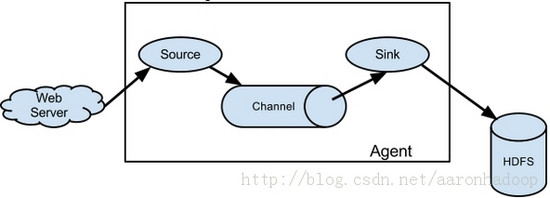

Flume--日志收集系统之初见
Flume is a distributed, reliable, and available service for efficiently collecting, aggregating, and moving large amounts of log data. It has a simple and flexible architecture based on streaming data flows. It is robust and fault tolerant with tunable reliability mechanisms and many failover and recovery mechanisms. It uses a simple extensible data model that allows for online analytic application.
大体意思是说：Flume是一个高可用的，高可靠的，分布式的海量日志采集、聚合和传输的日志系统，
它有一个简单灵活的架构，这一个架构基于一个数据流。它有可协调的信度机制和故障切换及恢复机制，因而稳健并且可以兼容错误。Flume使用一个简单可扩展的数据模型，这个数据模型允许在线分析的应用。
架构图及数据流模型：
- 简单

Flume的数据流由事件(Event)贯穿始终。事件是Flume的基本数据单位，它携带日志数据(字节数组形式)并且携带有头信息，这些Event由Agent外部的Source，比如上图中的Web Server生成。当Source捕获事件后会进行特定的格式化，然后Source会把事件推入(单个或多个)Channel中。你可以把Channel看作是一个缓冲区，它将保存事件直到Sink处理完该事件。Sink负责持久化日志或者把事件推向另一个Source。
很直白的设计，其中值得注意的是，Flume提供了大量内置的Source、Channel和Sink类型。不同类型的Source,Channel和Sink可以自由组合。组合方式基于用户设置的配置文件，非常灵活。比如：Channel可以把事件暂存在内存里，也可以持久化到本地硬盘上。Sink可以把日志写入HDFS, HBase，甚至是另外一个Source等等。
Flume支持用户建立多级流，也就是说，多个agent可以协同工作，并且支持Fan-in、Fan-out、Contextual Routing、Backup Routes。如下图所示：

- 复杂

8大组件（ components）
Event
An event is a singular unit of data that can be transported by Flume NG.
Source
A source of data from which Flume NG receives data.从Client收集数据，传递给Channel。
Sink
A sink is the counterpart to the source in that it is a destination for data in Flume NG . 从Channel收集数据，运行在一个独立线程。进行相应的存储文件系统，数据库，或者提交到远程服务器。
Channel
A channel is a conduit for events between a source and a sink. 连接 sources 和 sinks ，这个有点像一个队列。主要提供一个队列的功能，对source提供中的数据进行简单的缓存。
Source and Sink Runners
Agent
Flume NG generalizes the notion of an agent. An agent is any physical JVM running Flume NG. 使用JVM 运行Flume。每台机器运行一个agent，但是可以在一个agent中包含多个sources和sinks。
Configuration Provider
Client
生产数据，运行在一个独立的线程。
Flume整体架构介绍
Flume架构整体上看就是 source–>channel–>sink 的三层架构,，类似生产者和消费者的架构，他们之间通过queue（channel）传输，解耦。看图：
